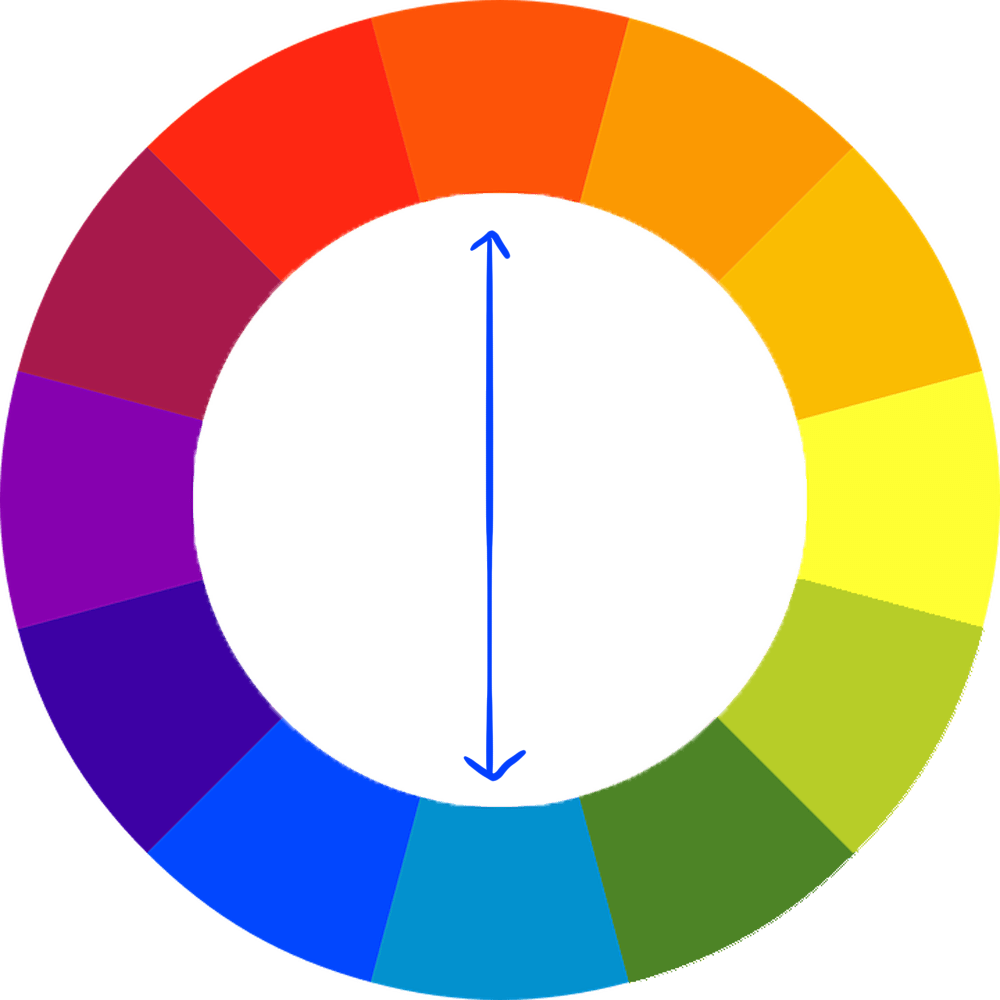
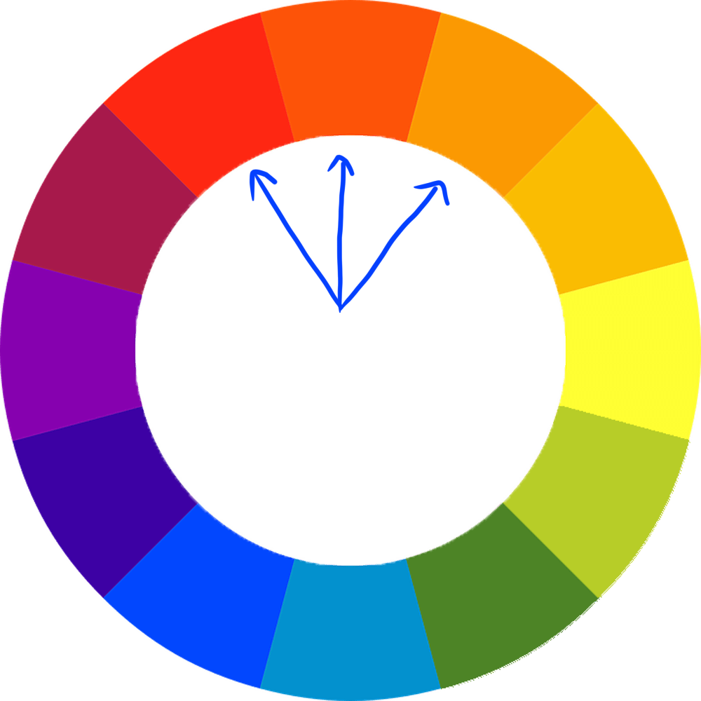
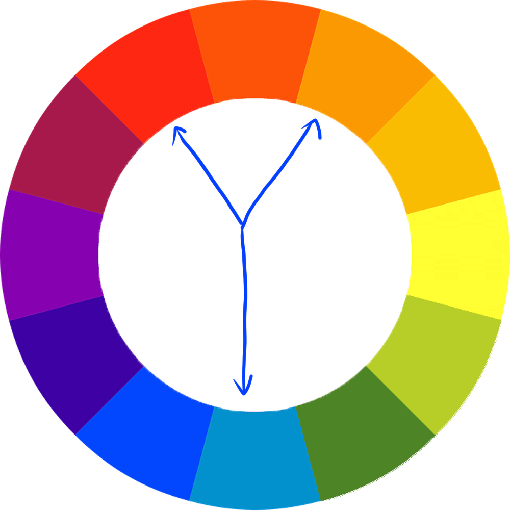
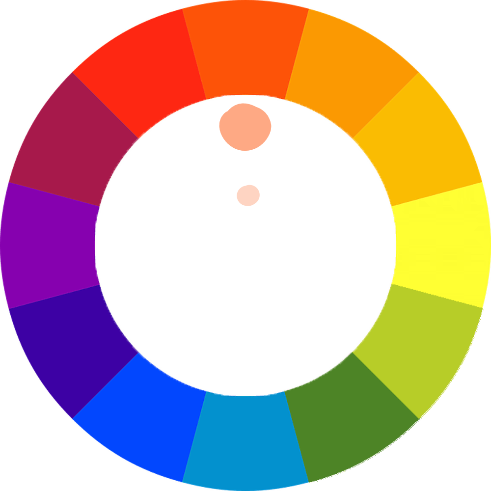
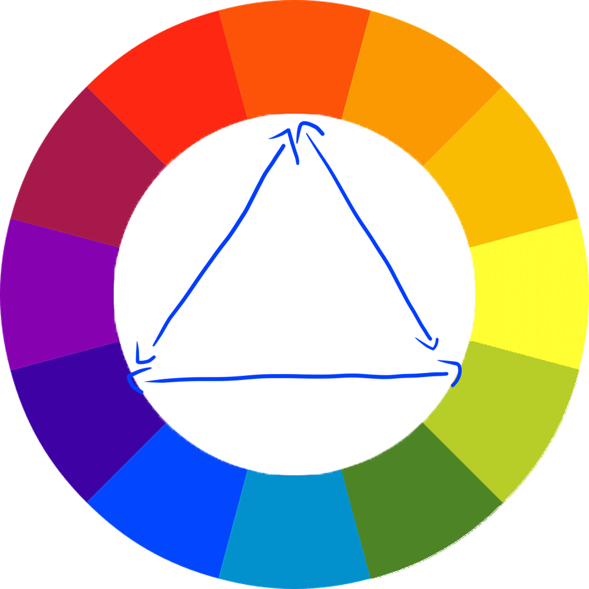
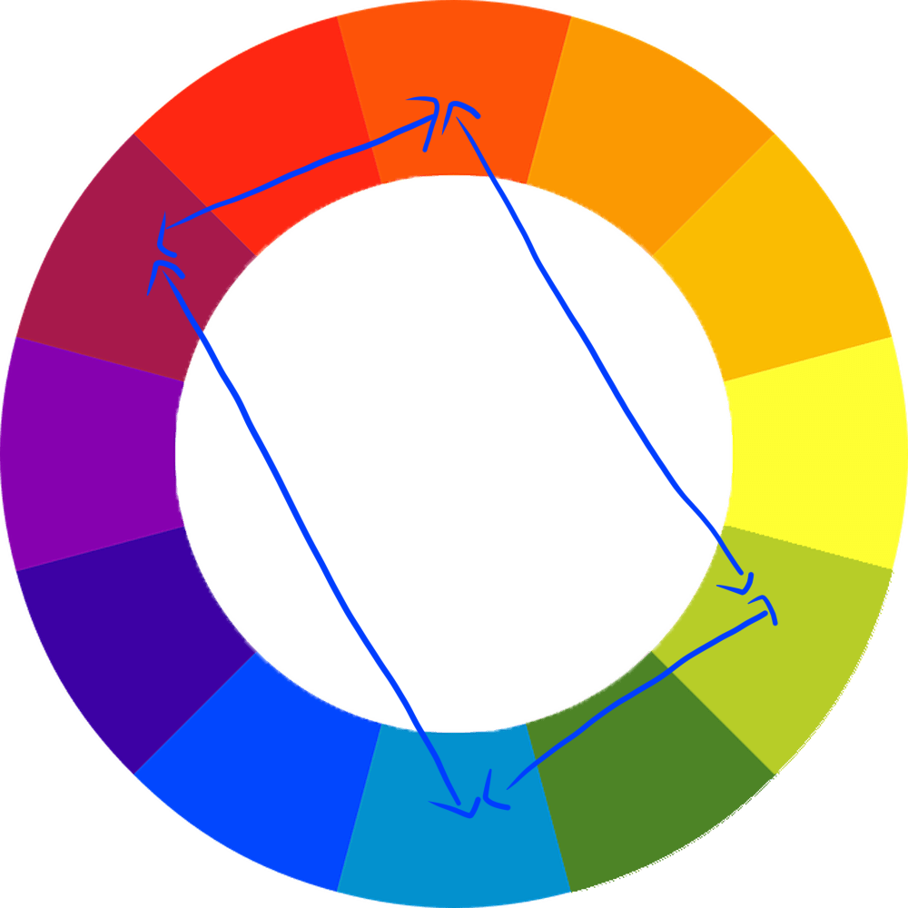

Complementary
Complementary colours are colours that appear on opposite sides of the colour wheel. This combination of colours makes the other colour stand out, and is a classic combination.

Complementary colours are colours that appear on opposite sides of the colour wheel. This combination of colours makes the other colour stand out, and is a classic combination.




